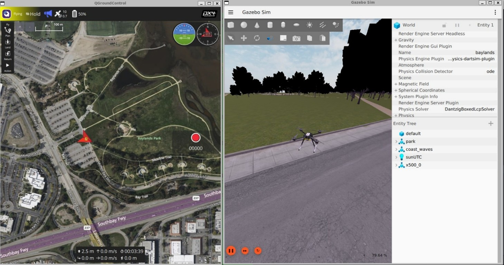

PX4 Simulation Integration Survey
Report on survey and investigation into the PX4 community’s preferences for robotic simulation intergration

This work has been sponsored by Dronecode Foundation

1 Introduction
This report describes the research efforts conducted to assess user experiences of PX4 and simulation integration. The purpose of the survey study is to identify the most pressing developer goals for the PX4 simulation integration roadmap, based on the needs of the PX4 user community.
1.1 Changelog Report
| Date | Changes |
|---|---|
| December 10, 2025 | All preperation in single chapter (including forum) |
| November 28, 2025 | Forum to appendix, written recommendations. |
| November 26, 2025 | Adding evaluation of results |
| November 24, 2025 | Adjusting of figures and tables |
| November 20, 2025 | Final result ROS-aerial group |
| November 11, 2025 | Preliminary results PX4 summit |
| October 15, 2025 | Send out final survey |
| October 14, 2025 | Improved editing pilot survey results |
| October 13, 2025 | Added final survey changes and justifications |
| October 9, 2025 | Analysis pilot survey |
| September 30, 2025 | Forum analysis report |
| September 23, 2025 | Send out pilot survey |
| September 7, 2025 | Improvements to pilot survey (Jay) |
| August 28, 2025 | Started draft pilot survey |
| July 31, 2025 | Project description formalized |
2 Survey Preparation
2.1 Survey Design and Methodology
2.1.1 Survey Structure
The PX4 Simulator Community Survey was designed to gather feedback from users across all aspects of their simulation experience. The survey is set up in six main sections: demographic background, current simulator usage patterns, technical infrastructure, simulator experience evaluation, feature priorities, and strategic recommendations. The survey uses a mixed-methods approach combining quantitative Likert-scale ratings with qualitative open-ended questions.
The survey begins by establishing user segments through profession, simulator expertise level, and PX4 experience duration. This segmentation allows analysis of how different user groups (students, researchers, commercial engineers) experience simulation and what improvements they prioritize.
Questions about which simulators users employ, their purposes (research, testing, commercial development), vehicle types, and scale (single vs. multi-vehicle) help map the current PX4 simulation landscape. This information provides insight into how the community currently uses simulation tools.
Hardware and infrastructure questions examine potential barriers to adoption. The survey asks whether users have purchased new systems, what operating systems they use, and where they encounter limitations (CPU, GPU, RAM). This data provides information about current hardware requirements and performance constraints.
The survey uses detailed Likert-scale assessments across five dimensions: installation experience, user interface, technical performance, feature support, and community resources. This structured approach allows users to provide feedback on specific aspects of their simulation experience. Open-ended questions at the end allow participants to share observations that may not be captured by the structured questions.
Users rate importance of potential improvements across technical capabilities, platform compatibility (OS support, ROS integration), usability, and advanced features. This provides a prioritization matrix showing which capabilities matter most to different segments of the community.
The survey concludes with open-ended questions soliciting input on the most important improvements needed and offering opportunities for follow-up interviews. This acknowledges that while quantitative data identifies patterns, qualitative discussion often reveals underlying causes and context that ratings alone cannot capture.
The pilot version of the survey can be found in the Appendix ( Section 5 )
2.2 Pilot Survey Analysis
A pilot survey was conducted with 6 PX4 developers to validate the survey instrument before wider distribution. Respondents were primarily professional engineers with advanced to expert-level simulator expertise, and most have 5+ years of PX4 experience. The results of this pilot survey will be used to fine-tune the final survey before it is sent out to the rest of the community.
2.2.1 Simulator Usage and Goals
All pilot participants use Gazebo (Classic or Harmonic). About half also use AirSim, FlightGear, or JSBSim. Primary use cases center on algorithm development, pre-flight testing, and quality assurance in CI pipelines. All respondents simulate only single vehicles, which differs from forum analysis (Section 2.3) where multi-vehicle simulation appears as a recurring topic in the broader community. Vehicle types are dominated by quadcopters, followed by fixed-wing aircraft, with VTOL and specialized vehicles showing lower representation. The equipment carried by these quadcopters is predominantly cameras and perception sensors.
2.2.2 Technical Infrastructure
Almost all pilot participants had purchased new systems or upgraded existing ones specifically for simulation. Ubuntu dominates the operating system distribution with minimal Windows usage. Despite substantial hardware investment, half report no significant limitations.
2.2.3 Current Simulator Experience
Respondents evaluated their most recent simulator (primarily Gazebo variants) across multiple dimensions. Installation ease received mixed feedback. The overall user experience for experienced developers appeared positive, though opinions on documentation and tutorials quality varied considerably. It is unclear whether respondents were referring to PX4 documentation or simulator documentation. Several comments addressed physics realism, particularly in Gazebo itself. While sensor variety was received positively, sensor models and physics simulation received negative feedback from multiple respondents, with some linking this directly to simulator usefulness. Several open-ended responses mentioned PX4 versioning issues with simulators, noting difficulty in determining compatible version combinations. This observation aligns with patterns observed in the forum analysis (found in Section 2.3).
2.2.4 Desired Features and Priority
In the Desired Features and Priority section, pilot participants rated several items as very important. Software-in-the-loop (SITL) received higher importance ratings than Hardware-in-the-loop (HITL). ROS/ROS2 integration showed clear consensus as essential. Participants also indicated preference for Docker container support.
Realistic physics models received higher importance ratings than photorealistic rendering, despite most pilot participants using cameras as main sensors. Multi-agent simulation was rated as very important by half of the pilot participants, though they indicated typically simulating only single vehicles. Communication/network simulation received varied responses.
Participants showed preference for the ability to create custom sensor models and easily create robot models. GUI features such as drag-and-drop capabilities or beginner-friendly interfaces scored lower on importance ratings.
2.3 Forum Analysis: PX4 Simulation Integration Issues
This analysis examines 152 forum posts from the PX4 discussion forum (discuss.px4.io) spanning September 2024 through September 2025 to identify pressing issues in simulation integration. Several representative forum messages are referenced throughout this text, but the full list of forum posts evaluated is available upon request.
Several categories emerged from this investigation, which will be discussed here.
2.3.1 Version Stability and Platform Support
Forum posts indicate that some PX4 updates have introduced breaking changes. Users report that critical parameters for custom spawn positions were removed without alternatives[1], and Hardware-in-the-Loop functionality broke in newer versions[2]. Platform-specific issues appear more frequently for macOS users, especially those on Apple Silicon[3].
2.3.2 Core Simulation Reliability
Users report problems with simulation accuracy and stability. Some posts describe Extended Kalman Filter position drift exceeding 50 meters during simple hovering[4], particularly when using custom worlds or external sensors. Flight dynamics issues appear in multiple posts: drones arm correctly but fail to take off, or cannot climb beyond minimal altitudes[5], [6]. One post identifies an architectural limitation preventing custom simulators from running slower than real-time[7].
2.3.3 Multi-Vehicle Scalability
For multi-vehicle simulation, users report startup times exceeding 20 minutes for multiple drones[8]. Configuration complexity appears in multiple posts, including managing unique ports, distinguishing sensor topics, and coordinating spawn positions[9], [10], [11]. Posts also describe communication failures between ground control stations and multiple vehicles[12], [13].
2.3.4 Ecosystem Integration
Multiple posts describe ROS2 bridge reliability issues where sensor data visible in Gazebo fails to reach ROS2 topics[14], [15]. Offboard control through ROS2 shows inconsistent behavior in several posts, including frame convention problems and actuator control failures[16], [17]. Beyond ROS2, posts describe difficulties integrating alternative simulators like Unity, AirSim, and MATLAB/Simulink[18], [19], [20].
2.3.5 Custom Model Development
Posts describe unpredictable flight behavior when modifying physical properties[21], and unclear physical meaning in the motor control interface[22]. Specialized vehicle types (VTOLs, coaxial configurations, fixed-wing aircraft) appear in several posts describing issues, including dangerous behaviors like uncontrolled dives during transitions[23], [24].
2.3.6 Sensor and Environment Fidelity
Posts describe camera streams failing to initialize properly[25], documented features like terrain following not working[26], and environmental effects such as wind failing to manifest despite available commands[27]. Multiple posts report connection failures with ground control stations when using custom worlds[28], with some requiring undocumented workarounds[29].
2.3.7 Deployment and Containerization
Posts report Docker-based deployment issues including connection failures, missing video feeds, and rendering problems[30], [31], [32].
2.4 Changes and Additions for Final Version Survey
The final version of the PX4 Simulator Community Survey incorporates changes based on pilot feedback and forum analysis. The survey was reduced from approximately 35 questions with over 70 individual items to 29 questions with fewer than 40 items for participants to answer.
2.4.1 Survey Length and Structure
The most significant change was removing the entire “Current Simulator Experience” section, which contained 30+ Likert-scale items asking respondents to rate installation ease, user experience, performance, and documentation. Pilot respondents mentioned survey length concerns, and these quantitative ratings showed less consensus compared to open-ended feedback. The survey now retains two open-ended questions asking what users like most and their biggest frustration. The Gazebo team will be conducting their own survey on Gazebo simulator issues separately.
2.4.2 Audience Expansion
The pilot survey participants were primarily experienced, industrial-oriented developers, all simulating only single vehicles. Forum analysis showed issues (installation problems, multi-vehicle challenges, documentation gaps) that appear to affect novice and intermediate users. The final version adds explicit language in the introduction stating the survey is for “anyone who has used or is interested in using simulation with PX4” and adds “Hobbyist / Independent Developer” as a profession option.
2.4.3 Version Compatibility and Integration
Forum analysis (Section 2.3) revealed version compatibility as a recurring topic, with posts describing breaking changes between PX4 releases removing critical features like custom spawn positions. Multiple users expressed frustration that “things worked in one configuration, but does not in another.” The final survey adds explicit questions about version compatibility issues and importance.
2.4.4 Multi-Vehicle and Advanced Features
While pilot respondents all simulated single vehicles, forum analysis identified multi-vehicle simulation as a recurring topic. The final survey retains questions about the importance of multi-vehicle simulation and networking communication simulation.
2.4.5 Strategic Roadmap Priority
A new section asks respondents to select their single top priority for PX4 simulation development and justify why. This forced-choice question aims to identify what participants consider the most important issue in their workflow regarding PX4 simulation integration.
The final survey can be found in the Appendix ( Section 6 )
3 Survey Results
The survey ran for approximately one month (October 14 – November 16, 2025) and received 120 responses. Only 2 participants submitted incomplete forms, representing a 98.3% completion rate.
With an estimated PX4 autopilot user base of 15,000, this sample size yields a margin of error of 9% at a 95% confidence interval. This exceeds the commonly recommended 5% margin of error for surveys, which should be considered when interpreting results and developing recommendations.
Out of privacy considerations, the survey results will only be shown in the form of the graphs presented in this report. If you’d like extra clarification or any specific results, please reach out to the author.
3.1 Professions and Domains
The survey revealed that the largest respondent group consisted of “Professional Engineers/Technical Consultants” (54%), followed by “Researchers” (23%) and “Students” (15%) (see Figure 1). By domain, 44% of respondents worked in commercial aerospace or drone businesses, followed by “Academia and Education” (18%) and “Defense/Government” (16%).


3.2 Experience
In terms of PX4 autopilot experience, the largest group of participants had 1-3 years of experience (33%), followed by those with 1 month to 1 year (20%), and those with over 5 years (17%). Regarding simulator expertise, most respondents rated themselves as intermediate users (39%), followed by advanced users (34%), with novices comprising the third-largest group (17%). Please see Figure 2.


3.3 Profile of Personas
Based on these responses, we identified five distinct user personas depicted in Figure 3: “Senior Engineers (P1),” “Junior Engineers (P2),” “Academic Researchers (P3),” “Academic Students (P4),” and “Independent Hobbyists (P5).” These personas will be used to analyze and interpret the survey results in subsequent sections.

3.3.1 P1 - Senior Engineers
Highly experienced professional engineers with advanced to expert-level simulation expertise. These are the power users who deploy PX4 simulators in production environments for commercial products, defense systems, and critical applications.
- Profession: Professional Engineer / Technical Consultant
- Expertise Level: Advanced: 27 (75%) / Expert: 9 (25%)
- Primary Domains: Aerospace/Drones (Commercial): 24 (67%), Defense/Government: 10 (28%), Research Institutions: 1 (3%), Other: 1 (2%)
3.3.2 P2 - Junior Engineers
Professional engineers in commercial or defense settings who are building their drone and simulation expertise. This includes career switchers, new hires at drone companies, and engineers expanding their skillset to include simulation tools.
- Profession: Professional Engineer / Technical Consultant
- Expertise Level: Intermediate: 20 (69%), Novice: 9 (31%)
- Primary Domains: Aerospace/Drones (Commercial): 18 (62%), Defense/Government: 6 (21%), Research Institutions: 2 (7%), Other: 3 (10%)
3.3.3 P3 - Academic Researchers
Academic and industry researchers using PX4 simulators for cutting-edge research, publications, and experimental work. This group spans university researchers, PhD students/postdocs, and R&D engineers at companies and research institutions.
- Profession: Researcher (Academic/Industry)
- Expertise Level: Intermediate: 14 (50%), Advanced: 11 (39%), Expert: 2 (7%), Novice: 1 (4%)
- Primary Domains: Academia/Education: 10 (36%), Aerospace/Drones (Commercial): 7 (25%), Research Institutions: 7 (25%), Defense/Government: 3 (11%), Aerospace/Drones (Hobbyist): 1 (3%)
3.3.4 P4 - Academic Students
University students (BSc/MSc level) learning drone simulation as part of their coursework, research projects, or thesis work. This is the entry-level academic segment that represents the future pipeline of PX4 developers and users.
- Profession: Student (BSc/MSc)
- Expertise Level: Intermediate: 7 (39%), Novice: 8 (44%), Advanced: 2 (11%), Expert: 1 (6%)
- Primary Domains: Academia/Education: 12 (67%), Aerospace/Drones (Hobbyist): 3 (17%), Aerospace/Drones (Commercial): 2 (11%), Other: 1 (5%)
3.3.5 P5 - Independent Hobbyists
Drone enthusiasts, hobbyists, and independent developers exploring PX4 for personal projects, skill development, or potential commercial opportunities. This small but passionate group contributes to community growth and grassroots adoption.
- Profession: Hobbyist / Independent Developer / Non-professional
- Expertise Level: Intermediate: 5 (63%), Novice: 2 (25%), Advanced: 1 (12%)
- Primary Domains: Aerospace/Drones (Hobbyist): 6 (75%), Aerospace/Drones (Commercial): 1 (12%), Robotics: 1 (12%)
3.4 Participants Experience with Simulation
This section presents results on participants’ past simulation experience and currently used simulators, as well as data on simulated vehicle types and hardware specifications.

3.4.1 Simulation Past Experience
Participants listed all simulators they had previously used, as shown in Figure 4. The two most common were Gazebo (New) with 94 responses and Gazebo Classic with 79 responses, the two officially supported simulators for PX4 autopilot. Usage drops significantly after these, with Simulink (29), Isaac Sim (28), and AirSim (26) following. The “Other” category included X-Plane, Webots, CoppeliaSim, SIH, and several custom-built simulators.
3.4.2 Simulation Current Use
Figure 4 also shows current simulator usage based on an open-ended question. Due to ambiguity about which version of Gazebo participants were using, the following post-processing classifications were applied:
- Participants with experience only in Gazebo Classic were classified as currently using Gazebo Classic
- Participants with experience only in Gazebo New were classified as currently using Gazebo New
- Participants who specified “gz sim,” version names (Harmonic/Ionic), or clarified in comments were classified as Gazebo New
After this classification, 30 participants who had used both versions could not be definitively categorized. These are shown in light red in Figure 4, with the assumption they likely use the most current and recommended simulator (Gazebo New), though this metric should be interpreted with caution. Overall, Gazebo New remains the most widely used simulator (46 confirmed users), followed by Gazebo Classic (19). AirSim and its forks account for 5 current users, while Simulink and JSBSim each have 4 users.
3.4.3 Summary of Comments on Gazebo New
Since Gazebo New is the most widely used simulator, the following summarizes user feedback on its strengths and weaknesses. Users appreciate the versatility of Gazebo New and its seamless integration with both PX4 SITL and ROS 2. They value the wide variety of available sensors—a feature lacking in many other simulators—as well as its open-source nature and large community support. Users also noted significant improvements in the physics model compared to Gazebo Classic.
However, users identified several areas needing improvement. Multiple participants reported instability on operating systems other than Ubuntu, particularly macOS. Many prefer Gazebo Classic’s GUI, describing it as less complex to work with. Adding custom sensors through the plugin framework and creating custom vehicle models pose significant challenges for many developers, particularly due to inadequate documentation. Beginners especially struggle to find appropriate documentation.
Academic researchers (P3) specifically noted that Gazebo is not well-suited for reinforcement learning applications, leading them to use alternative simulators for this purpose. They also requested better multi-vehicle simulation support, such as the ability to simplify or disable physics for certain vehicles. Additionally, while some users praised the updated physics, others reported that flight dynamics and environmental variables still fall short of requirements.
3.4.4 Simulated Vehicles
Participants indicated which vehicle types and payloads they typically simulate (Figure 5). Quadcopters are the most commonly simulated vehicle type (104), followed by multicopters (52), with fixed-wing and VTOL vehicles tied for third (50 each). For payloads, cameras are most prevalent (103), followed by range sensors such as LiDAR/ToF sensors (88), with gimbals and communication equipment sharing third place.
Regarding the number of vehicles simulated simultaneously, the majority simulate only one vehicle (63%), followed by those who typically simulate 5-10 vehicles (26%), and 7% who simulate teams of 2-4 vehicles (see Figure 6).


3.4.5 Simulation Host Specifications
The survey also asked questions about the host computers running the simulation, including GPU-enabled systems, OS distribution, and whether the simulation runs locally or remotely. Figure 7 shows the hardware specifications participants use to run their simulators. The majority use PCs with dedicated GPUs, with Ubuntu as the dominant operating system. Most participants run simulators locally on their machines rather than on remote servers.


3.5 Purpose and Goals
3.5.1 Purpose for Using Simulators
Figure 8 displays the reasons and purposes for using simulators. Participants most commonly use simulators for testing before real flights (89), followed by algorithm development (84) and robot prototyping and design (59).
The radar graph on the right of Figure 8 shows that both academic researchers and students also emphasize academic research and education/learning. Senior engineers (P1) strongly prioritize commercial product development, followed by junior engineers (P2) and independent developers/hobbyists (P5). Students (P4) and hobbyists (P5) also occasionally use simulation for competition preparation.


3.5.2 Goals of Using Simulators
The bar graph on the left of Figure 9 shows that all participants use simulators as development tools for their robotic systems, followed by mission planning and validation (74) and quality assurance in continuous integration (48). The radar graph on the right reveals that senior engineers (P1) drive the high CI/QA scores, while academic researchers (P3) and independent hobbyists (P5) also use simulators for generating machine learning training data. A portion of students (P4) and hobbyists (P5) additionally indicated using simulation for safety testing.


3.6 Features and Priorities
Participants rated the perceived importance of simulator features on a scale from 1 (least important) to 5 (very important) across four categories: technical capabilities, platform & compatibility, usability and accessibility, and advanced features. These ratings are also analyzed by persona, as defined in the previous section.
3.6.1 Technical Capabilities
Table 1 presents the importance ratings for technical capabilities. Software-in-the-loop (SITL) is considered most important with a score of 4.63, followed by realistic physics simulation (4.38) and hardware-in-the-loop (3.82). Junior engineers (P2) showed a slightly different preference profile, rating failure mode simulation (3.96) and simulated networking capabilities (4.00) higher than other technical capabilities beyond SITL.

3.6.2 Platform and Compatibility
Table 2 shows that the highest-rated platform and compatibility feature is ROS/ROS2 integration (3.92), followed by network capabilities and version compatibility between different PX4 releases (both 3.82). Researchers (P3) prioritized this category more than any other persona profiles. Notable deviations include senior engineers (P1), who rated Docker/containerization support (3.81) higher than network capabilities, and independent developers/hobbyists (P5), who rated network capabilities significantly higher than all other platform and compatibility features.

3.6.3 Usability and Accessibility
Table 3 presents importance ratings for usability and accessibility features. Participants rated template and example library availability as most important (4.14), followed by real-time debugging support and easy installation process. Academic students (P4) prioritized this category more than any other persona. Academic researchers (P3), students (P4), and independent developers/hobbyists (P5) all rated real-time parameter tuning higher than easy installation process, deviating from the overall ranking.

3.6.4 Advanced Features
Table 4 lists the importance ratings for advanced simulation features. Across all participants, custom sensor model creation was rated most important (4.17), followed by easy robot model creation (4.13) and scenario scripting and automation (3.94). Academic researchers (P3) prioritized this category more than any other persona. Ratings were relatively consistent across personas, with the notable exception that independent developers/hobbyists (P5) also rated swarm simulation as highly important.

3.6.5 Top Wanted Functionalities
Across all personas, the top 5 most important features are:
- Software-in-the-loop support
- Realistic physics simulation
- Custom sensor model creation
- Template/example library availability
- Easy robot model creation
Table 5 breaks down the top 5 features by persona. Software-in-the-loop capabilities are considered essential by all personas except students (P4), who prioritize template and example library availability and real-time parameter tuning more highly. Realistic physics simulation is universally valued, though independent developers/hobbyists (P5) rated network capabilities and template availability higher. ROS/ROS2 integration is more important to advanced simulator users (senior engineers (P1) and academic researchers (P3)), while both junior (P2) and senior engineers (P1) rated custom sensor creation and easy robot model creation as equally important.

3.7 Final Choice for Priority Roadmap
In a final single-choice question, participants selected the one feature they would prioritize if only one item could be on the roadmap (see Figure 10). The largest group (18%) requested improvements to the current Gazebo integration with PX4 autopilot. Another 17% prioritized better documentation and examples for existing simulators, while 16% wanted more realistic physics and higher-quality sensor models.

Figure 11 presents a bar chart showing how each persona influenced the roadmap priorities. Professional engineers, both senior (P1) and junior (P2), voted for improved Gazebo integration with PX4. Academic researchers (P3) prioritized more realistic sensor and physics models along with better multi-vehicle/swarm simulation support. A significant portion of senior engineers (P1) also voted for reducing the sim-to-real gap, while some advocated for a new PX4-optimized simulator. Junior engineers (P2) emphasized enhanced simulation creation capabilities. Both junior engineers (P2) and academic students (P4), representing novice and intermediate users, indicated they would benefit most from better documentation and examples for existing PX4 simulation integrations. Finally, both senior engineers (P1) and academic students (P4) requested improved ROS/ROS2 integration with PX4 simulation.

4 Brief Discussion and Recommendation
This section reflects on the survey’s results and provides general recommendations for next steps. This survey was designed to identify the main priorities of simulation users. Of the 120 participants and an estimated community size of 15,000 developers, the margin of error is approximately 8-9%. While this is higher than the commonly recommended 5%, the results show significant preferences that can serve as guidelines.
4.1 Reflections on the Survey Results
Overall, participants agreed that software-in-the-loop support is essential and must remain a priority. While there were few direct comments about SITL functionality itself, several respondents noted that it was unclear what happens in the background or how to adjust features and sensors. This suggests the SITL documentation could benefit from review.
One surprising result was the difference in perceived importance between realistic physics models and photorealistic rendering. These two features were nearly opposite on the importance scale. This is unexpected given that AirSim and Isaac Sim, both celebrated for their rendering capabilities, were mentioned as popular alternatives to Gazebo. However, users of these simulators represented only a small portion of respondents. An interesting suggestion from the survey was to explore JSBSim integration for flight dynamics in Gazebo New. That said, it is difficult to evaluate “how realistic” physics models need to be without widely accepted benchmarks for simulator evaluation.
Documentation emerged as a significant pain point. Many participants reported difficulty finding proper documentation, though they did not always specify where. Several mentions pointed to Gazebo’s physics plugins, such as the multicopter plugin, environment plugins like wind, and physics integration, as being poorly documented. These are areas where the PX4 community could contribute directly to Gazebo.
A clear difference emerged between the needs of more experienced developers (P1 and P3) and those with limited experience (P2, P4). The latter group showed stronger preference for better examples and tutorials, which is also reflected in the feature importance scores. Senior engineers and researchers expressed more interest in improving simulator realism, primarily related to physics. Senior engineers (P1) additionally emphasized improving the overall PX4-Gazebo integration.
Regarding which simulator to prioritize: Gazebo New is both the most used and the most requested for improvement. A substantial portion of users (the second-largest group) still relies on Gazebo Classic despite growing compatibility issues. Since Gazebo Classic is end-of-life, there will be limited support from the maintenance team to address these. For issues with Gazebo New, this survey lacked the granularity to create specific tickets, so additional effort is needed within the community to properly document problems and create minimal reproducible examples.
4.2 Recommendation
The following recommendations are offered by this report’s author; final decisions should be made in consultation with the PX4 simulation maintenance team based on their availability and capabilities.
Based on the survey results, the recommendation is not to focus efforts on building a new simulator or integrating with community simulators like AirSim forks or Isaac Sim. Instead, development efforts should focus solely on improving the current PX4 and Gazebo New integration. Gazebo Classic should no longer be recommended, as it is end-of-life and out of scope.
The most immediate opportunity is improving documentation. The quick-start guide appears sufficient for most users, as basic setup runs mostly out-of-the-box. However, users struggle to understand the underlying workflows. When junior developers and students need to customize their frame or model, they encounter difficulties due to a lack of examples. These could be developed through structured efforts similar to ROS’s and Gazebo’s tutorial parties.
For advanced developers, there is a need for better troubleshooting guides and more comprehensive API documentation-contributions that would also benefit Gazebo’s plugin documentation. Additionally, a version compatibility matrix documenting tested combinations of ROS, PX4, and Gazebo versions would address a frequently cited frustration. Given the complexity of these version combinations, it must remain possible for developers to contribute fixes and documentation to either the PX4 or Gazebo teams.
The next priority should be custom model and sensor creation, which was consistently mentioned as a pain point. This is challenging both from the Gazebo side and the PX4 integration side. Junior engineers would benefit most from improvements here.
Finally, there is clear interest in better physics simulation. However, as in aerial robotics more broadly, it is difficult to define what “better physics” means without knowing the application. Swarm simulations may require minimal physics fidelity, while a quadcopter carrying a payload demands much more. An investigation into benchmarking techniques (perhaps drawn from the game development industry) could help establish evaluation criteria for physics simulation quality.
5 A. PX4 Simulator Community Survey - Pilot
This survey aims to understand the developer needs of PX4 users and their simulation experiences. We’re hoping to improve the current situation and make things better for everyone.
This survey should take only 10-15 minutes to fill in.
Getting to Know You
We’d like to understand your background and experience level to better contextualize your feedback.
1. What is your primary profession?
- Student (BSc/MSc)
- Researcher (Academic/Industry)
- Educator/Teacher
- Professional Engineer / Technical Consultant
- Other: ___________
2. What is your level of expertise regarding robotic simulators?
- Novice
- Intermediate
- Advanced
- Expert
3. How long have you been working with PX4?
- I haven’t worked with PX4
- I just started working with PX4 (< 1 month)
- 1 month - 1 year
- 1-3 years
- 3-5 years
- 5+ years
Current Simulator Usage
This section helps us understand which tools you’re using and how you’re using them in your current workflow.
4. Which simulators have you worked with in your setup? (Select all that apply)
- Nvidia Isaac Sim
- Gazebo (formerly known as Ignition)
- Gazebo Classic
- AirSim
- MuJoCo
- Pybullet
- FlightGear
- JSBSim
- Other: ___________
5. What was your primary purpose for using simulators? (Select all that apply)
- Academic research
- Education/learning
- Robot prototyping/design
- Algorithm development
- Testing before real flights
- Demonstration/presentation
- Competition preparation
- Commercial product development
- Flight tooling design
- Other: ___________
6. For which goals are you using simulators? (Select all that apply)
- Development tool for robotic systems
- Quality assurance in continuous integration
- Data generation for machine learning
- Mission planning and validation
- Training pilots/operators
- Safety
- Regulatory compliance testing
- Other: ___________
7. What type of aerial robotic vehicle are you working with?
- Helicopter
- Quadcopter
- Multicopters (more than 4 propellers)
- Fixed wing
- Hybrid / VTOL vehicles
- Blimps
- Other: ___________
8. Does your platform have additional equipment or payloads? (Select all that apply)
- Manipulator arm
- Gripper/claw
- Gimbal
- Camera
- Cargo hook/winch
- Perception Sensors (lidar, sonar, etc.)
- Communication equipment
- None of the above
- Other: ___________
9. How many robots/UAVs do you typically simulate simultaneously?
- Just one (1)
- 2-4
- 5-10
- 10-100
- 100+
Technical Setup & Constraints
Understanding your hardware setup and limitations helps us design tools that work for everyone’s environment.
10. Did you have to purchase/upgrade your computer specifically for simulation?
- Yes, bought entirely new system
- Yes, upgraded existing system
- No, used existing hardware
- Using cloud/remote computing
- Other: ___________
11. What operating system do you primarily use for simulation?
- Ubuntu
- Arch Linux
- Fedora Linux
- Windows
- MacOS
- Other: ___________
12. Which version of the operating system have you selected above? ___________
13. Do you use a GPU enabled computer, and if so, what kind of specifications does it have? ___________
14. What’s your biggest hardware limitation?
- CPU performance
- GPU/graphics performance
- RAM capacity
- Storage space
- Network bandwidth
- No significant limitations
- Other: ___________
15. Do you find the necessary hardware/computer specifications for simulation acceptable or workable?
- Yes
- No
16. Anything to add to any of the questions answered in this section regarding computer specifications? ___________
Current Simulator Experience
Here we dive deep into your experience with simulators - what works well and what doesn’t. This feedback is crucial for identifying the biggest areas for improvement.
Please fill in the survey based on your first instinct (don’t linger too long per question)
17. Which simulator have you used most recently? ___________
18. Setup and Installation Experience
Rate on scale: 1 (I agree) to 5 (I do not agree)
- “The simulator was easy to install.”
- “I had to install too many external dependencies”
- “The error and debug messages were easy to understand”
19. User Experience
Rate on scale: 1 (I agree) to 5 (I do not agree)
- “I needed to use an extensive guide to navigate through the GUI”
- “Using the simulator was a smooth experience.”
- “The user interface felt cluttered and complex.”
- “The error/bug messages were easy to read”
20. Technical Performance
Rate on scale: 1 (I agree) to 5 (I do not agree)
- “Objects in the simulation didn’t behave realistically.”
- “The simulator can run simulations faster than real-time.”
- “The simulation’s graphics were very photo-realistic.”
- “I experienced frequent crashes and freezes.”
21. Feature Support
Rate on scale: 1 (I agree) to 5 (I do not agree)
- “The simulator offered a wide variety of sensors.”
- “I can not easily make a custom drone in this simulator”
- “I’m able to use this simulator easily with swarms”
22. Documentation and Tutorials
Rate on scale: 1 (I agree) to 5 (I do not agree)
- “The documentation/website was easy to find.”
- “The documentation was difficult to follow.”
- “There were plenty of tutorials available.”
23. Community and Support
Rate on scale: 1 (I agree) to 5 (I do not agree)
- “It was hard to find a clear way to get help or ask questions.”
- “The community and support forums were helpful.”
- “It took too long to get my questions answered.”
24. What do you like the most about current/latest simulator you are using? ___________
25. What’s your biggest frustration with current/latest simulator you are using? ___________
26. Anything else to add? ___________
Desired Features & Priorities
This section helps us prioritize development efforts by understanding which features matter most to different types of users.
Please fill in the survey based on your first instinct (don’t linger too long per question)
27. Please rate the preferred Technical Capabilities
Rate on scale: 1 (Not important) to 5 (Very important), or No preference/opinion
- Hardware-in-the-loop support
- Software-in-the-loop support
- Faster than real-time simulation
- Photorealistic rendering
- Realistic physics simulation
- Weather/environmental simulation
- Failure mode simulation
- Communication simulation
28. Please rate the preferred Platform & Compatibility
Rate on scale: 1 (Not important) to 5 (Very important), or No opinion or preference
- Multiple OS support
- ROS/ROS 2 integration
- Cloud simulation capabilities
- Docker/containerization support
29. Please rate the preferred Usability & Accessibility
Rate on scale: 1 (Not important) to 5 (Very important), or No opinion or preference
- Beginner-friendly interface
- Easy installation process
- Drag-and-drop model capability
- Template/example library availability
- Real-time parameter tuning
30. Please rate the preferred Advanced Features
Rate on scale: 1 (Not important) to 5 (Very important), or No opinion or preference
- Multi-agent/swarm simulation
- Machine learning integration
- Custom sensor model creation
- Easy robot model creation
- Scenario scripting/automation
- Performance benchmarking tools
- CAD program integration for custom models
31. Any more features that we should pay attention too as well? ___________
Final Questions
Final thoughts and opportunities for deeper engagement with our improvement efforts.
32. What’s the most important improvement needed in simulation supported in the PX4-ecosystem? ___________
33. Any additional comments or suggestions? ___________
34. Would you be willing to participate in follow-up interviews? - Yes - No
35. If yes, please provide on which email address we can contact you. Your email address will only be used for this exact purpose. ___________
Thank you!
Thank you for taking the time to share your experiences! Your feedback will help improve simulation tools for the entire PX4 community.
Please press next to submit the form
6 B. PX4 Simulator Community Survey - Final
This survey aims to understand the developer needs of PX4 users and their simulation experiences. We’re hoping to improve the current situation and make things better for everyone.
This survey should take only 10-15 minutes to fill in.
6.1 About This Survey
We’re gathering feedback from the PX4 community to inform our simulation integration roadmap. Your input will help us prioritize which simulators to support, what features to develop, and where to focus our documentation efforts.
Who should take this survey: - Anyone who has used or is interested in using simulation with PX4 - Users of any experience level, from beginners to experts - Whether you’re in academia, industry, or working as a hobbyist
Your responses are anonymous. We’ll only collect email addresses if you volunteer for follow-up interviews.
Getting to Know You
We’d like to understand your background and experience level to better contextualize your feedback.
1. What is your primary profession?
- Student (BSc/MSc)
- Researcher (Academic/Industry)
- Educator/Teacher
- Professional Engineer / Technical Consultant
- Hobbyist / Independent Developer
- Other: ___________
2. What domain are you working in?
- Academia/Education
- Aerospace/Drones (Commercial)
- Aerospace/Drones (Hobbyist)
- Defense/Government
- Research Institution
- Other: ___________
3. What is your level of expertise regarding robotic simulators?
- Novice
- Intermediate
- Advanced
- Expert
4. How long have you been working with PX4?
- I haven’t worked with PX4
- I just started working with PX4 (< 1 month)
- 1 month - 1 year
- 1-3 years
- 3-5 years
- 5+ years
Current Simulator Usage
This section helps us understand which tools you’re using and how you’re using them in your current workflow.
5. Which simulators have you worked with in your setup? (Select all that apply)
- Nvidia Isaac Sim
- Gazebo (formerly known as Ignition)
- Gazebo Classic
- JMAVSim
- AirSim
- MuJoCo
- Pybullet
- FlightGear
- JSBSim
- Simulink
- Other: ___________
6. What was your primary purpose for using simulators? (Select all that apply)
- Academic research
- Education/learning
- Robot prototyping/design
- Algorithm development
- Testing before real flights
- Demonstration/presentation
- Competition preparation
- Commercial product development
- Flight tooling design
- Other: ___________
7. For which goals are you using simulators? (Select all that apply)
- Development tool for robotic systems
- Quality assurance in continuous integration
- Data generation for machine learning
- Mission planning and validation
- Training pilots/operators
- Safety
- Regulatory compliance testing
- Other: ___________
8. What type of aerial robotic vehicle are you working with? (Select all that apply)
- Helicopter
- Quadcopter
- Multicopters (more than 4 propellers)
- Fixed wing
- Hybrid / VTOL vehicles
- Blimps
- Other: ___________
9. Does your platform have additional equipment or payloads? (Select all that apply)
- Manipulator arm
- Gripper/claw
- Gimbal
- Camera
- Cargo hook/winch
- Perception Sensors (lidar, sonar, etc.)
- Communication equipment
- None of the above
- Other: ___________
10. How many robots/UAVs do you typically simulate simultaneously?
- Just one (1)
- 2-4
- 5-10
- 10-100
- 100+
11. How do you typically interact with your simulator? (Select all that apply)
- Mainly through GUI
- Headless/CI environments
- Custom plugins/extensions
- ROS/ROS2 integration
- API/scripting
- Other: ___________
12. What’s do you like the most with current/latest simulator you are using?
13. What’s your biggest frustration with current/latest simulator you are using?
6.2 ____
Technical Setup & Constraints
Understanding your hardware setup and limitations helps us design tools that work for everyone’s environment.
14. Did you have to purchase/upgrade your computer specifically for simulation?
- Yes, bought entirely new system
- Yes, upgraded existing system
- No, used existing hardware
- Using cloud/remote computing
- Other: ___________
15. What operating system do you primarily use for simulation?
- Ubuntu
- Arch Linux
- Fedora Linux
- Windows
- MacOS
- Other: ___________
16. What operating system version are you using for the above selection?
17. Do you run simulations locally or remotely?
- Locally on my machine
- On remote machines
- In the cloud
- Other: ___________
18. Is your machine on which you run your simulation GPU-enabled?
- Yes
- No
- Not sure
19. What’s your biggest hardware limitation?
- CPU performance
- GPU/graphics performance
- RAM capacity
- Storage space
- Network bandwidth
- No significant limitations
- Other: ___________
20. Anything to add to any of the questions answered in this section regarding computer specifications?
Desired Features & Priorities
This section helps us prioritize development efforts by understanding which features matter most to different types of users.
Please fill in the survey based on your first instinct (don’t linger too long per question)
21. Please rate the preferred Technical Capabilities
Rate on scale: 1 (Not important) to 5 (Very important), or No preference/opinion
- Hardware-in-the-loop support
- Software-in-the-loop support
- Faster than real-time simulation
- Photorealistic rendering
- Realistic physics simulation
- Weather/environmental simulation
- Failure mode simulation
- Communication simulation
22. Please rate the preferred Platform & Compatibility
Rate on scale: 1 (Not important) to 5 (Very important), or No opinion or preference
- Multiple OS support
- ROS/ROS 2 integration
- Cloud simulation capabilities
- Docker/containerization support
- Network capability (PX4 and simulator on different machines)
- Compatibility between different versions of PX4 and simulators
23. Please rate the preferred Usability & Accessibility
Rate on scale: 1 (Not important) to 5 (Very important), or No opinion or preference
- Beginner-friendly interface
- Easy installation process
- Template/example library availability
- Real-time parameter tuning
- Real-time debug support (pause, step through simulation)
- Simulation snapshot/hotstart capability
24. Please rate the preferred Advanced Features
Rate on scale: 1 (Not important) to 5 (Very important), or No opinion or preference
- Multi-agent/swarm simulation
- Machine learning integration
- Custom sensor model creation
- Easy robot model creation
- Scenario scripting/automation
- Performance benchmarking tools
- CAD program integration for custom models
25. Any more features that we should pay attention to as well?
PX4 Simulation Roadmap
This section helps us understand what strategic direction would best serve the PX4 community.
26. If there was one thing you’d like the PX4 simulation development team to work on, what would it be?
- Improving the current Gazebo simulator intergration
- A new PX4-optimized simulator
- Add support for more simulators for PX4
- Better documentation and examples for existing PX4 simulation
- More simulation model creation capabilities (more types of vehicles)
- More realistic sensor/physics models
- Improve stability/performance of existing simulator integrations
- Better PX4-simulator integration (easier SITL setup, better parameter mapping)
- More realistic sensor/physics models (Sim2Real gap)
- Better multi-vehicle/swarm simulation support
- Improved ROS/ROS2 integration with PX4 simulation
- Fixing PX4 - Simulator version compatibility issues
- Other
27. Why is this choice your top priority?
Final Questions
Final thoughts and opportunities for deeper engagement with our improvement efforts.
28. Any additional comments or suggestions?
29. Would you be willing to participate in follow-up interviews? If yes, please provide an email address where we can contact you. Your email address will only be used for this exact purpose.
Thank you!
Thank you for taking the time to share your experiences! Your feedback will help improve simulation tools for the entire PX4 community.
Please press next to submit the form